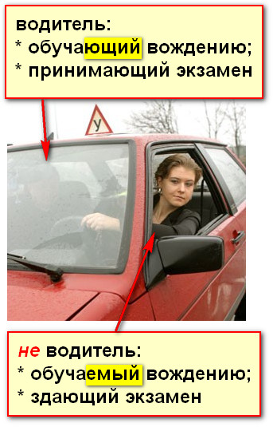
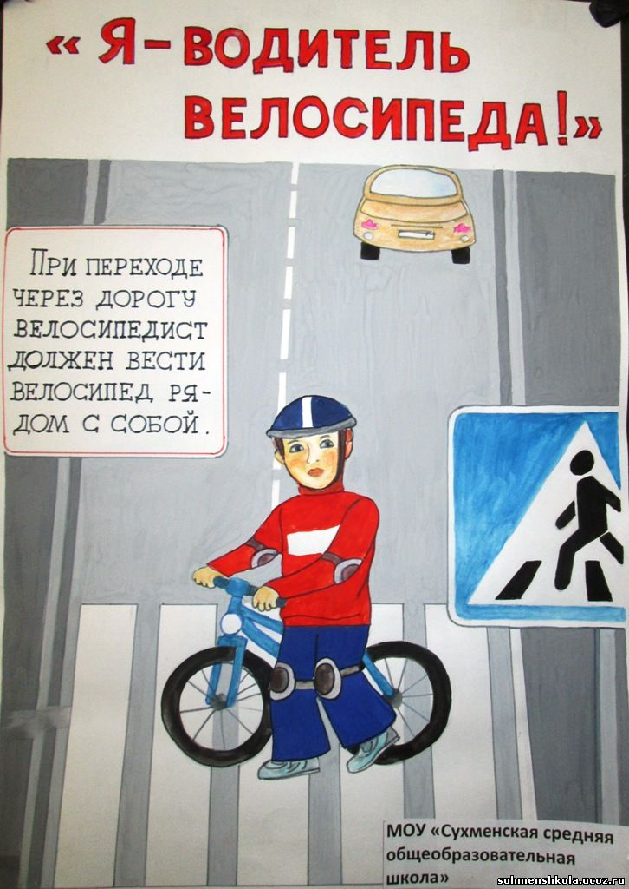

водитель — физическое лицо, управляющее транспортным средством, за исключением лица, обучаемого управлению механическим транспортным средством (сдающего квалификационный практический экзамен на право управления механическим транспортным средством). К водителю приравниваются лицо, обучающее управлению механическим транспортным средством (принимающее квалификационный практический экзамен на право управления механическим транспортным средством) и при этом находящееся в нем, а также всадник, погонщик скота;

Схема водитель / не водитель. На основе фото с сайта moi-saratov.ru.

Велосипедист является водителем велосипеда.
Детский рисунок с сайта suhmenshkola.ucoz.ru.
Водителями также считаются:
всадник, т.е. сидящий на лошади;
возница, т.е. управляющий гужевой повозкой (телегой, каретой);
пастух, т.е. погонщик скота.
Более подробно об этом говорится в главе 21 ПДД: Движение гужевых транспортных средств, всадников и прогон скота.